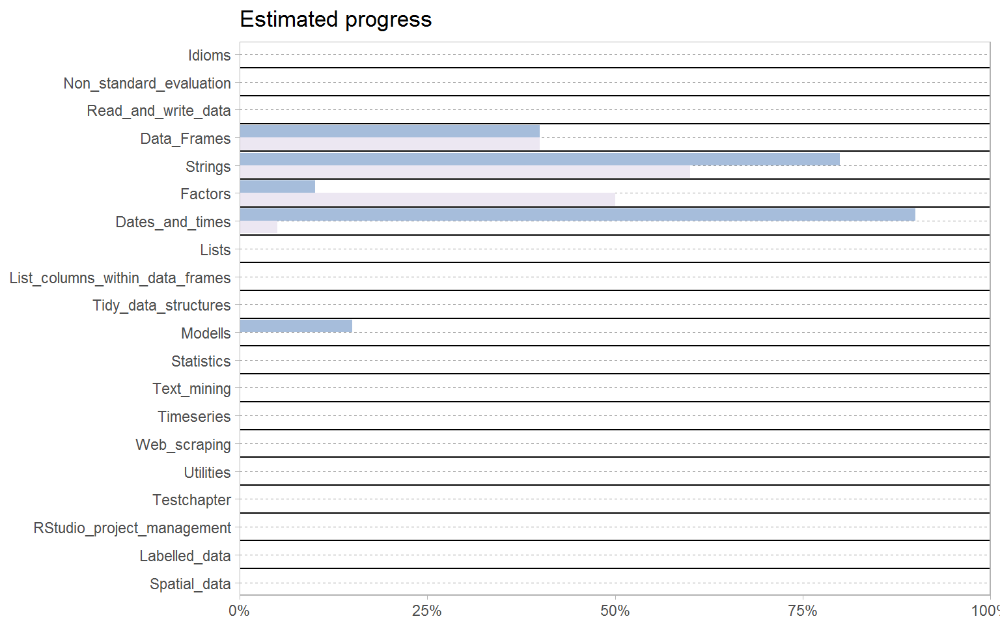

Tidyverse Cookbook
2018-12-07
Prerequisites
The basic idea of this book is to provide a documentation of the tidyverse written in a solution driven cookbook style. As an extra I would like to provide similar solutions based on base R functionality.
0.1 This is work in progress

0.2 Motivation
Some reasons to write this book:
- Whenever I google for some specific tidyverse syntax, I have to search through different vignettes or blogposts spread across the internet.
- Other documents are focussed on teaching the tidyverse, but it is hard to find a quick solution to a specific problem.
- The tidyverse has grown a lot and most resources only touch the most common usecases.
- Whenever I know a solution in base R and want to achieve the same within a tidyverse workflow it takes some time to find the equivalent functionname. (Sometimes similar problems occur into the opposite direction.) I really like how this is solved in the stringr package vignette and I would like to have the opportunity to search for all tidyverse functions in this way (see also below).
- Bookdown gives great opportunities to share work.
- Bookdown also provides a fantastic structure for documentations.
- Writing a documentation is a good way to explore something, because you have to document everything just one time and can explore new stuff afterwards. This way I expect to find more cool functions like
case_when()or common idioms, like regex handling in stringr functions, that will boost my code :) - A nice longtime gain might be the possibility to learn R via flashcards copied from this book into systems like Anki to become more fluent in the future.
- It is a great way to get an overview of the tidyverse.
0.3 Motivation for base R solutions
One strength of the tidyverse is that it hides a lot of quirks that base R provides and inherits to many packages that rely on it. This allows to stick to a specific workflow from the point you enter the tidyverse until you leave it. This is why I highly recommend to head your data analysis as fast as possible into the tidyverse workflow whenever possible. However, there might be situations where you need the functionality and concepts of the tidyverse, but you want to relay on base R. In these cases it is easy to get lost in quick workarounds that seem handy at first but hide some pitfalls that let you lose the way of a systematic data analysis workflow ending up in a unique non maintainable solution. Therefore I try to provide “good practice” solutions within base R that achieve the same goal as its tidyverse counterparts. This idea is somehow inspired by the stringr package vignette. While tidyverse solutions will usually be written in non-standard evaluation and usually provide an escape hatch, I’ll try to provide standard evaluation base R solutions.
0.4 Structure of this book
The basics of the tidyverse are some shared idoms. Those give a structure, which makes it feasible that a lot of packages work so well together and enables to build up new functionality on top. The idea behind this was quickly understood by the community; grammars, that share these idioms, start to arise more often these days. It can be expected that the influence of the tidyverse will keep on growing and also the need for new connection and utility functions to integrate already established frameworks into the scope of the tidyverse will grow. This again could lead to new ideas, structures and relations to new fields of the tidyverse. Therefore this book might be work in progress for very long time and a final structure is not in sight.
0.5 Contribution
This work is just a side project and any help is very much appreciated. Therefore you can find the edit button on top of each page. This lets you add changes to this book directly on github. My hope is that this book will be authored by the community and most of my future work is maintenance and keeping a structure that provides a good overview and lets you find the solution of your problem as fast as possible. To provide a contribution, please insert it directly into the regarding section. In case of doubts about the correct place, just add it to the last chapter.
This book is not an introduction to the tidyverse. If you are new to it, I recommend R for Data Science and tidyverse.org. If you are curious about good base R practices I would first look in Advanced R. However, if you feel that you picked up a great solution for some specific task, feel free to come back to this book and add a pull request editing the appropriate section. If you do, please regard the following conventions.
0.6 Conventions
0.6.1 Tasks
This book contains many reproducible examples. These should show intended usecases by package authors as well as other (maybe creative) uses that don’t have a simpler solution. All usecases are called “tasks” in this book and printed in bold. New tasks should be described by a sentence containing different verbs (some specific and some general), so that the tasks are easy to find.
0.6.2 Solutions
All tasks should have a solution. Since this is a tidyverse cookbook, there should be at least one “tidy” solution. Whenever possible I would like an extra solution which is based on the base, methods (note that this package might not be loaded in batch mode), utils or stats packages. If no (or no straightforward) solution seems available, a solution from other packages should be given. In the latter case the libraries must be contained in the solution. If one solution has a disadvantage, this should also be described # by a comment at the top of the codepart.
Some other easy rules should be applied:
- The solutions should always be an example, which is as easy as possible and as complex as necessary.
- The latter means that you should use easy datasets that don’t need much space to print (there might be a section with datasets to be used in the future).
- When you want to show something for one variable and the same concept also holds for more variables, then provide the example for a two variable case.
- When providing new solutions please use Hadley`s styleguide.
- General data and libraries should be included on top of each chapter, so that the code in the solutions is short and readable. In case of conflicts relating to two functions with the same name, but from different packages (or unique names, but from unpopular packages), then use the syntax
packagename::functionname. - When there seems to be two different base R or tidyverse approaches to a problem, just suffix these solutions with integers, eg. TDVS1, TDVS2, … .
0.6.3 Example task
Task: Filter/subset a data.frame.
TDVS:
iris %>% filter(Species == "versicolor" & Sepal.Width < 3) # or iris %>% filter(Species == "versicolor", Sepal.Width < 3)BASE:
iris[iris[, "Species"] == "versicolor" & iris[, "Sepal.Width"] < 3, drop = FALSE]
Note the following considerations.
Code:
- I think it’s best do include
drop = FALSEevery time, since it is so easy to forget. - I used
[instead of$, because the first doesn’t use partial matching. The solution via brackets makes it also really easy to turn the code into a function likefunction(dat, var){dat[var, ]} iris[,"Species"]also makes clear that we want to subset a data frame by an atomic vetor, so I didn’t choose[[oriris["Species"].- I also didn’t choose
subset(), since the base R solutions should use standard evaluation when possible. - In the tidyverse solution I used the pipe as I think it’s general practice.
- Not included in this example, but for tasks about modification of atomics the solution might also be written within
mutate(). - I included a second tidyverse solution, to highlight, that you can not only filter by one logical expression but also by many, which are combined by
&. In this example it might not be super useful, but in many other cases with more named arguments it is really helpful to see, at which position the...arguments are supplied.
Formatting:
- Every task gets a number.
- Every solution should start on its own line, 4 spaces intended.
- To emphasize the solutions, use blue for TDVS and green for BASE.
- Above I wrote that different solutions should be highlighted via TDVS1, TDVS2, … . In these cases I think it is convenient to write everything in one solution, since they only show different possibilities of
filter()’s syntax without any further big differences. The first version might be a little bit more compact, easier to program with and also minimal faster, that is why it is shown first.
However, most of the above are just details and the structure might change anyway, so when in doubt just push your edits and I`ll try to take care on the remain.
Contributors: